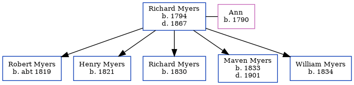

Richard Myers 1794 - 1867
[ Home ] | [ Calendar ] | [ Surnames Index ] | [ Family History ], Richard Myers was born in Ferryhill, Durham, England in 1794 and had 5 children with Ann: Robert, Henry, Richard, Maven and William. On Mar 30, 1851, he lived at Victoria Inn, South Shields, Tyne and Wear, England1.
He died in 1867 in North Shields, Tyne and Wear.
Children
- Robert was born c. 1819
- Henry was born in 1821
- Richard was born in 1830
- Maven was born in 1833
- William was born in 1834
Citations
- 1851 England, Wales & Scotland Census - Findmypast (was age 56 and the head of the household)
Media
1851 England, Wales & Scotland Census - GBC/1851/0016094448
Family Tree
Generated by Ged2Site. Last updated on Jul 20, 2025